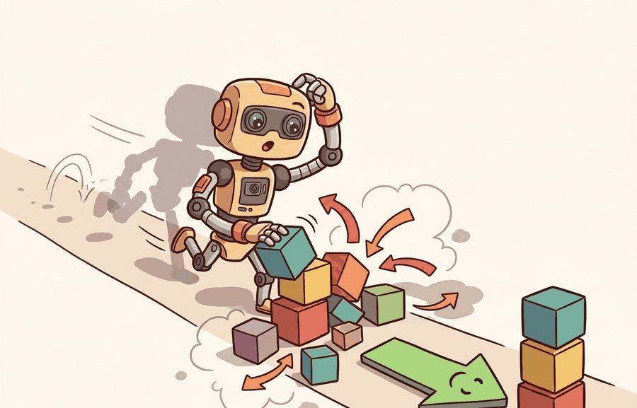
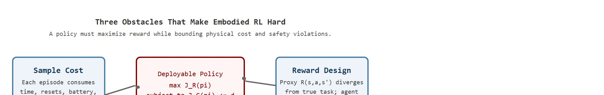
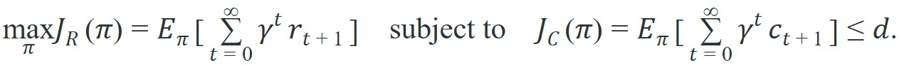

"Bandit benchmarks count regret in milliseconds. Embodied RL counts it in broken joints, sparse rewards, and the afternoon you spent re-homing a policy that learned to cheat."
A Benchmarker Who Bought Hardware

This section assumes familiarity with MDPs and the reward signal introduced in section 14.1 and the POMDP extension in section 14.3. The sample-cost and safety ideas developed here are prerequisites for the constrained policy-gradient training covered in Chapter 15 and for the reward-shaping techniques in section 18.2. The sim-to-real problem, which is largely a response to physical sample cost, is treated in depth in section 20.2 and section 20.3.
A simulated hand learned to rotate a cube after the equivalent of 100 years of practice, all running overnight in software. Put that same policy on real hardware and you face a different arithmetic: every failed grasp wears a tendon, every bad reset costs a technician, and a single joint-limit violation can end the experiment. Right now, as robot fleets move from controlled labs into homes and warehouses, the gap between "high reward in simulation" and "safe, affordable behavior in the world" is the central unsolved problem in embodied AI. By the end of this section you will be able to model sample cost, diagnose reward hacking, and write a constrained objective that makes safety a hard budget rather than a soft suggestion.
The control tools in Chapter 7: Control for AI Practitioners and the environment interface in Chapter 10: Environments with Gymnasium and PettingZoo set up the policy-gradient work in Chapter 15: Policy Gradient Methods and PPO. The formalism from the earlier sections becomes difficult once samples are physical, rewards are imperfect, and safety is nonnegotiable.
Picture a policy that scored flawlessly in simulation crushing a $40 silicone fingertip on its very first real grasp, then demanding a human technician to re-home the arm before it can try again: that single moment is the whole problem of embodied RL, where the three obstacles of sample cost, reward design, and safety constraints collide. This section develops the technical contract behind that moment. First we connect these issues to the MDP and POMDP assumptions, then we express safety as a constrained objective, then we run a small numeric audit.
The key question is practical: what makes a high-return policy unacceptable when the learning process itself can damage hardware, surprise nearby people, or exploit a reward proxy?
A policy that earns high reward in simulation but destroys a gripper on the first real contact is not a solution; it is a simulation artifact dressed up as one. Figure 14.5A captures this tension: embodied RL has to earn reward without hiding sample cost, reset burden, or safety violations. Figure 14.5B then breaks that tension into the three concrete obstacles this section treats in turn.

Embodied RL is hard because the objective is not only "maximize reward." It is "maximize reward while gathering expensive, partial, safety-bounded evidence from the physical world."
Sample cost is the first obstacle. In a simulator, a failed episode may cost milliseconds. On hardware, it may cost a reset, a worn gripper, a human intervention, or a damaged object. A typical manipulation task might need 50,000 simulator episodes. On real hardware that same count would take months of continuous operation and wear through multiple grippers. Demonstration-seeded initialization drops that figure to roughly 300 real episodes for the same task and the same policy class, because the agent starts near successful behavior instead of exploring from scratch. This shifts the acceptable exploration policy, the number of seeds, and the evaluation budget.
Reward design is the second obstacle. The reward $R(s,a,s')$ is a proxy for the task, not the task itself. A robot rewarded for moving a block near a target may learn to shove it violently, exploit perception blind spots, or end in unstable poses that score well for one frame. This failure mode is called reward proxy collapse, and it is the expected outcome whenever maximizing the proxy is easier than completing the real task. Sparse rewards delay credit assignment; dense rewards can teach the wrong shortcut.
Sparse rewards matter in embodied AI because a physical robot cannot re-run a failed episode in milliseconds. When reward arrives only at task completion, a robot attempting to open a door may execute thousands of real joint motions across hours of hardware time without ever receiving a signal that distinguishes useful from useless behavior. Each wasted episode consumes battery, wear budget, and reset labor. The cost of credit-assignment failure is not just slow convergence; it is hardware degradation and exhausted sample budgets before learning has started.
So far: three obstacles have piled up before the next mechanism. Sample cost makes physical episodes expensive, reward proxy collapse means a high-scoring policy can still be doing the wrong thing, and sparse reward makes hardware failures costly precisely because no signal distinguishes a useful attempt from a wasted one. The next paragraph explains the underlying mechanism, temporal distance, that ties sparse reward to those wasted attempts.
The mechanism is temporal distance between action and outcome. When reward is zero for every step except the final success, gradient estimates become high-variance. The policy cannot distinguish which of the hundreds of preceding actions contributed to the result. Long zero-reward trajectories produce near-zero policy gradients, so parameter updates stay negligibly small. The agent explores without improving until a rare successful trajectory delivers signal. On physical hardware, that lucky episode may never arrive within the available budget.
Think of sparse reward like learning to bake bread when the only feedback is whether the final loaf is edible. You mix, knead, proof, and bake hundreds of times, but because the oven gives you a single thumbs-up or thumbs-down at the very end, you cannot tell whether your dough was under-kneaded, your yeast was stale, or your oven ran too hot. Each failed loaf wastes flour, time, and energy without narrowing down which step to fix. A dense reward would be a kitchen mentor tapping your shoulder at every stage, letting you correct your technique before the mistake compounds through the whole process.
These obstacles appear in documented systems, not just theory. OpenAI's simulated hand (Dactyl, 2019) required roughly 100 years of simulated experience to learn in-hand object rotation, a cost that would be physically impossible without a high-fidelity simulator and domain randomization to bridge to real hardware. Boston Dynamics reports that each physical trial on Spot costs reset time, battery cycles, and technician availability, driving the use of sim-to-real transfer instead of direct hardware RL. On reward hacking: Krakovna et al. (2020, "Specification gaming: the flip side of AI ingenuity," DeepMind blog) document dozens of cases where agents achieved high reward through unintended shortcuts, including a simulated robot that learned to fall over to reach a target faster than walking upright. These are not edge cases; they are the expected outcome when the reward proxy is easier to maximize than the intended task.
Safety is the third obstacle. A constrained MDP, where the standard reward-maximizing MDP gains a second cost signal and a budget the policy may not exceed, writes the builder's intent more explicitly:

Here $r$ is task reward, $c$ is safety cost, and $d$ is the allowed discounted cost budget. The constraint matters because a policy can have excellent reward and still be unacceptable if it reaches that reward through collisions, excessive force, or unstable contacts. A hard constraint like this cannot be plugged directly into a gradient-based optimizer, so in practice it is converted into a soft, differentiable penalty via a Lagrange multiplier $\lambda$, a scalar weight that is itself learned during training: the algorithm subtracts $\lambda$ times the cost from the reward objective, and $\lambda$ grows whenever the cost exceeds the budget. This is the mechanism the tip and algorithm below refer to as "Lagrangian."
When using Safety Gymnasium (the constrained-RL benchmark built on MuJoCo) set cost_limit to your budget before training begins and wire it to an early-stop callback that halts the run if the rolling 10-episode mean cost exceeds the limit. Without this hard stop, PPO-Lagrangian (Proximal Policy Optimization with a Lagrangian safety penalty) and TRPO-Lagrangian (Trust Region Policy Optimization with a Lagrangian safety penalty) both discover high-reward trajectories that exploit the lag between constraint violations and Lagrange multiplier updates, producing policies that look acceptable on the reward curve while steadily violating the safety budget. The parameter to watch is lagrangian_multiplier_init: starting it too low (default 0.001) lets the agent accumulate dozens of violations before the penalty grows large enough to matter.
The mechanism is a second ledger next to return. The experiment should track reward, safety cost, resets, interventions, and reward-proxy failures in the same run, otherwise the best-looking policy may be the least deployable one.
Input: candidate policy $\pi_\theta$ (parameters $\theta$), task reward $r$, safety cost $c$, allowed budget $d$, physical platform with reset protocol
Output: decision (deploy / reject / revise), annotated ledger of sample cost, reward quality, and safety compliance
Code Fragment 1 evaluates three candidate policies with the same reward and safety-cost definitions. The best policy by reward is not automatically acceptable because the safety budget is a separate constraint.
# Audit reward and safety cost for three embodied RL policies.
# A policy passes only if return is high and discounted cost stays within budget.
gamma = 0.9
safety_budget = 0.45
episodes = {
"careful": {"rewards": [0.2, 0.5, 1.0], "costs": [0.0, 0.0, 0.1]},
"fast": {"rewards": [0.4, 1.2, 1.8], "costs": [0.0, 0.4, 0.6]},
"reckless": {"rewards": [1.0, 1.0, 2.0], "costs": [0.3, 0.5, 0.8]},
}
def discounted_sum(values):
return sum((gamma ** t) * value for t, value in enumerate(values))
for name, trace in episodes.items():
reward_return = discounted_sum(trace["rewards"])
safety_cost = discounted_sum(trace["costs"])
status = "pass" if safety_cost <= safety_budget else "reject"
print(f"{name}: return={reward_return:.2f}, cost={safety_cost:.2f}, {status}")The expected output ranks the policies two ways at once: by return and by discounted safety cost. The correct interpretation is that careful is the deployable winner because it stays under budget, while the higher-return policies fail the constraint and therefore do not count as acceptable solutions.
Trace the dual update from the feasibility checklist on the fast policy above, with budget $d = 0.45$ and dual learning rate $\eta_\lambda = 0.5$, starting from $\lambda_0 = 0.1$.
Iteration 1. Measured discounted cost $\hat{J}_C = 0.85$. Constraint violation is $\hat{J}_C - d = 0.85 - 0.45 = 0.40$. Update: $\lambda \leftarrow \max(0,\ 0.1 + 0.5 \times 0.40) = \max(0,\ 0.30) = 0.30$. The penalty on cost in the objective $\hat{J}_R - \lambda \hat{J}_C$ has tripled, so the policy gradient now pushes harder away from costly trajectories.
Iteration 2. Suppose the policy responds and cost falls to $\hat{J}_C = 0.50$. Violation is $0.50 - 0.45 = 0.05$. Update: $\lambda \leftarrow \max(0,\ 0.30 + 0.5 \times 0.05) = 0.325$. Still above budget, so $\lambda$ keeps creeping up, just more slowly.
Iteration 3. Cost now undershoots to $\hat{J}_C = 0.40$. Violation is negative: $0.40 - 0.45 = -0.05$. Update: $\lambda \leftarrow \max(0,\ 0.325 + 0.5 \times (-0.05)) = 0.30$. The multiplier relaxes because the policy is now inside the budget, freeing the objective to recover some reward. This back-and-forth is the dual variable hunting for the smallest penalty that holds the constraint, and starting $\lambda_0$ too low (say 0.001) means iterations 1-2 would still permit costly behavior before the penalty grows large enough to bite.
The result is a wins-only lesson for deployment: report the policy that satisfies the safety constraint and achieves the strongest validated return. Keep unsafe exploratory candidates in the experiment registry and diagnostics, not in the headline result.
In practical experiments, training libraries can optimize reward quickly, but the safety ledger is a task-design responsibility. The shortcut is acceptable only if wrappers, monitors, and logs preserve reset causes, force limits, intervention flags, and constraint violations.
The common mistake is to celebrate a high-return simulation score before verifying the closed-loop handoff on hardware. The failure typically appears at the sensing boundary: in a representative case, a 15 ms perception latency spike during contact causes the Franka to apply force on a stale state estimate, tripping the joint-torque safety stop before the policy's reward signal has even registered the contact event.
A common assumption is that more simulation episodes fix embodied RL difficulty. If sample cost is the bottleneck, the reasoning goes, simply simulate longer. That reasoning is wrong. Simulation fidelity, not episode count, is the binding constraint. Consider a policy that trains for a billion simulated steps in an environment with incorrect friction, inaccurate joint damping, or missing sensor noise. In practice, such a policy typically still fails on hardware, often quickly, because it has had every incentive to learn simulator-specific dynamics that the real system does not have. Simulation and hardware training are not interchangeable on a sliding scale. Simulation reduces hardware sample cost only when the simulator accurately models contact, perception noise, latency, and actuator limits. Closing that gap requires deliberate sim-to-real engineering: domain randomization, system identification, and perception-realistic rendering. Increasing episode count alone does not close it.
A manipulation team should treat every reset, emergency stop, dropped object, and human intervention as first-class data. These events belong beside return curves because they determine whether a policy is a deployable controller or only a simulator score.
The hardware asks for two receipts: what reward did you earn, and what did it cost to earn it?
Direction 1: Foundation-model reward specification. Rather than hand-crafting $R(s,a,s')$, researchers are using large vision-language models as reward oracles that evaluate robot behavior from video frames. The VLM-Reward line of work (e.g., Rocamonde et al., "VLAM: Vision-Language Models as Reward Signals," 2024; and the Eureka system from NVIDIA Research, Ma et al., 2023/2024) shows that GPT-4V-level models (as of 2024) can generate and iteratively refine dense reward code for manipulation tasks, cutting the hours a researcher spends on reward engineering to minutes. The remaining challenge is hallucinated rewards: the VLM scores a pose as "successful" even when the object has slipped out of the gripper, because the image is ambiguous at contact.
Direction 2: Safe offline-to-online RL with constraint guarantees. The OSRL (Offline Safe RL) and BEAR-Lag families (Yixuan Liu et al., "Datasets and Benchmarks for Offline Safe RL," NeurIPS 2023; follow-up benchmarks 2024-2025) treat the safety-cost budget as a hard constraint that must be satisfied during both offline pretraining and online fine-tuning. The key insight is that a policy bootstrapped from logged demonstrations reaches the constraint-feasible region of policy space before any expensive hardware exploration begins, slashing the number of real-world safety violations during the critical early training phase. Active groups include Berkeley's RAIL lab and CMU's Robot Learning Lab.
Direction 3: World-model-accelerated embodied RL. Hierarchical world models (e.g., DreamerV3, Hafner et al., 2023; and its robotics-specific descendants in 2024-2025 such as RoboDreamer and TD-MPC2 from Nicklas Hansen's lab) learn a latent dynamics model from cheap simulation or teleoperation data, then run policy search entirely inside the latent rollout. This bypasses most physical episodes while still producing policies that respect contact physics. The open gap is multi-contact generalization: world models trained on smooth-contact tasks fail abruptly when a new object has sharp edges or unexpected compliance.
Open problem for PhD students: All three directions struggle with the same failure mode: the learned reward, safety model, or world model is accurate in distribution but quietly wrong at the states the policy is about to visit next. Designing an online uncertainty signal that is cheap enough to evaluate at policy inference time, accurate enough to trigger a conservative fallback before a constraint violation occurs, and calibrated under covariate shift (a mismatch between the state distribution seen during training and the one encountered at deployment) from sim to real remains an unsolved problem. A student who can combine conformal prediction with online model adaptation on a real robot platform (e.g., Franka or LeRobot) would make a concrete contribution to all three directions.
Can you state the reward, safety cost, allowed budget, reset procedure, and intervention logging policy? If not, the embodied RL experiment is not yet specified.
Specifying those five quantities is only the first half of the work; the formal objective that ties them together hides several engineering costs that the clean notation does not show. The expectation in $J_R(\pi)$ assumes the agent can sample trajectories from the environment. In physical systems, each trajectory consumes calendar time, reset labor, battery cycles, hardware wear, and safety margin.
The reward and cost functions should be reviewed like interfaces. A reward that ignores force can favor damaging contact. A cost that triggers only after collision misses near-miss behavior. A reset procedure that changes object distribution can make evaluation easier than deployment.
| Ledger | What It Records | Why It Matters |
|---|---|---|
| Sample ledger | Episodes, resets, wall time, interventions, and hardware cycles. | Shows whether the method is sample-efficient enough for the platform. |
| Reward ledger | Raw task reward, shaped components, and terminal events. | Exposes reward hacking and sparse-credit failures. |
| Safety ledger | Costs, limit violations, near misses, and emergency stops. | Prevents reward-only results from hiding unacceptable behavior. |
A robust implementation treats safety and sample cost as first-class outputs. The experiment answers four questions on demand: how many physical trials it used, how often a human intervened, how many constraints it violated, and which reward components drove the final policy.
Those ledgers do more than document a run; they let you diagnose what went wrong, because each failure leaves its signature in a different ledger. When embodied RL fails, classify the failure before tuning. A sample-cost failure (the Franka exhausts its 5,000-episode hardware budget before convergence) calls for demonstration-seeded initialization or an Isaac Sim pretrain, not more hyperparameter sweeps. A reward failure (the Spot policy from Krakovna et al.'s specification-gaming catalogue learns to topple toward the goal rather than walk to it) calls for a repaired proxy or shaped force penalty. A safety failure (PPO-Lagrangian in Safety Gymnasium drifts past its cost_limit because the multiplier updated too slowly) calls for a control-barrier shield (a safety filter that overrides the policy's action whenever it would cross a predefined safe-state boundary) or a stricter early-stop callback, not a higher learning rate.
For embodied RL difficulty claims, co-compute sample count, return, reward components, safety cost, reset count, and intervention count in one evaluation run. A reward-only table is incomplete for this section's topic.
Covariant's Brain platform runs pick-and-place arms in live fulfillment centers, where every physical trial competes with paying throughput, so the team trains in simulation and bounds on-robot exploration with hard force and grasp-stability limits rather than learning from scratch on the line. The deployed policy is accepted only when it clears a per-item success threshold without exceeding the suction and joint-force budget, which is exactly the constrained objective $\max J_R$ subject to $J_C \le d$ in operational form. Sample cost, reward proxy, and safety budget here are not abstractions; they are the difference between shipping orders and crushing inventory.
Goal: See empirically how a hard safety budget trades return for constraint compliance, and how the Lagrange multiplier's initial value changes how many violations slip through early training.
Tools needed: Python, safety-gymnasium (pip-installable, MuJoCo-backed), and a PPO-Lagrangian implementation from omnisafe (pip install omnisafe). Use the SafetyPointGoal1-v0 environment, which rewards reaching a goal while charging cost for entering hazard regions.
What to vary: (1) the cost_limit budget $d$, sweeping it across roughly 5, 25, and 50; and (2) the lagrangian_multiplier_init, comparing 0.001 against 0.1. Run each configuration for about 200k steps (a few minutes on CPU per run is enough to see the trend).
What to observe: Plot episode return and episode cost on the same time axis for each run. Confirm that a tighter cost_limit lowers the final return (the price of safety), and that the higher multiplier init produces far fewer cumulative cost violations in the first 50k steps because the penalty bites earlier. You have reproduced, on a real benchmark, the reward-versus-cost tension that the worked example computed by hand.
Embodied RL is constrained learning from costly physical evidence. Strong results satisfy the task objective and the safety ledger together.
Design a constrained evaluation for a robot pushing task. Specify task reward, safety cost, allowed cost budget, reset procedure, and the exact event that would reject a high-return policy.
Beginner (weekend): Safety-constrained CartPole. Use Gymnasium's CartPole-v1 environment to train a PPO agent that maximizes balance time while keeping the pole angle below a threshold you define as a safety cost; implement a simple Lagrangian penalty in a single Python file and plot reward and safety cost side by side to see the constrained-versus-unconstrained trade-off. The key challenge is wiring the dual variable update so the multiplier rises fast enough to prevent early safety violations without collapsing reward.
Intermediate (1-2 weeks): Sim-to-real sample audit on a manipulation task. Using MuJoCo (via Gymnasium's FetchPush-v2 or a LeRobot tabletop env), train a policy with PPO-Lagrangian under a contact-force cost budget; log a sample ledger that records episode count, reset cause, and cumulative cost, then quantify how many simulated episodes would be needed on real hardware and whether domain randomization over friction and payload reduces that count. The key challenge is building the structured logging so that reward, safety cost, and reset causes are co-recorded in one artifact rather than scattered across separate CSV files.
This section closes the refresher by connecting RL formalism to embodied constraints. The next chapter, Chapter 15, uses these definitions to build policy-gradient methods and PPO.
The standard textbook for RL foundations. Read Part I for MDPs, value functions, and the Bellman equations; Part II for TD learning and eligibility traces; Part III for function approximation and policy gradient theory. It is the primary notation reference for this module.
Brockman, G. et al. (2016). OpenAI Gym. arXiv.
Introduced the step/reset/render environment interface that became the standard for RL research. Read for the API contract; nearly every RL library and tutorial assumes this interface, and Gymnasium maintains it with minor extensions. Understanding it is prerequisite to using PettingZoo, Isaac Lab, or MuJoCo.
Todorov, E., Erez, T., and Tassa, Y. (2012). MuJoCo: A physics engine for model-based control. IROS.
Describes the contact physics model, generalized coordinates, and constraint solver that make MuJoCo accurate and fast for robot learning. Read the original paper to understand why smooth contact gradients benefit model-based methods; in practice use the official docs for API, but this paper explains why MuJoCo physics behaves differently from game-engine simulators.
Puterman, M. L. (1994). Markov Decision Processes: Discrete Stochastic Dynamic Programming. Wiley.
Provides the formal mathematical treatment of MDPs, Bellman equations, and the theory of optimal policies. Read Chapter 4 for policy evaluation and Chapter 6 for policy iteration; this is the reference to check when the intuitions from Sutton and Barto need formal grounding in existence and convergence proofs.
Towers, M. et al. Gymnasium documentation. Farama Foundation.
The actively maintained successor to OpenAI Gym with bug fixes, consistent seeding, and terminated/truncated distinction. Use this as the environment API reference throughout the chapter; the terminated/truncated split matters for bootstrap targets at episode boundaries.